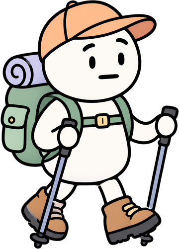

Voyage au cœur du web
Embarquez pour un tour du monde en cinq étapes et découvrez, comment fonctionne le web que vous utilisez tous les jours.
Cliquez sur la planète pour relancer la voiture !
Les cartes postales du voyage
-

Étape 1 · La campagne
La timeline du web
Remontez le temps de 1969 à aujourd'hui dans notre carnet de voyage.
Découvrir -

Étape 2 · La ville
Les URL
Apprenez à lire une adresse web et découvrez ce que répond le serveur.
Découvrir -

Étape 3 · La montagne
Les noms de domaine
Grimpez jusqu'au sommet pour comprendre le DNS, puis jouez au memory.
Découvrir -

Étape 4 · La mer
Les standards du web
Jetez une bouteille à la mer et construisez votre bateau en HTML, CSS et JavaScript.
Découvrir -

Étape 5 · La savane
La sécurité
Partez en safari photo pour repérer les arnaques cachées dans les messages.
Découvrir
Notre démarche
Texte provisoire : expliquez comment vous avez mené vos recherches et dans quel cadre ce site a été réalisé.